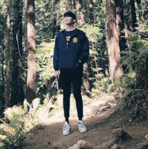

Safari Sleuths
We support conservationists and researchers in combating poaching through automating identification of individual animals.
Overview
Poaching continues to pose a threat to the survival of endangered species, even on protected land. Tracking individual animals and maintaining species counts is essential in combating this threat, by allowing conservationists to determine the impact of natural changes vs poaching impact and deciding where and when to deploy resources to protect the animals. However, current methods of identifying and counting individual animals are time-consuming and limit the ability to protect them in a timely manner.
Our solution to this problem is to automate the process of identifying individual animals in camera-trap still images, allowing conservationists to more quickly check and correct individual animal labels if necessary. Using publicly available datasets for individual animal identification, we successfully implemented models to predict more than 800 unique animals across 3 species and developed an interactive tool to allow users to view predicted labels and make corrections as needed.
Training Data
The hyena, leopard, and giraffe images were posted into an S3 bucket along with their annotation files containing the coordinates for their bounding boxes and individual IDs. We then further divided the individual animal images into a set of training, validation, and testing folders that were used for our modeling process.
Training Data Counts
| Species | Training | Validation | Test |
|---|---|---|---|
| Hyena (Crocuta crocuta) | 256 animals, 2,506 images | 162 animals, 310 images | 154 animals, 312 images |
| Leopard (Panthera pardus) | 430 animals, 5,473 images | 193 animals, 673 images | 186 animals, 673 mages |
| Giraffe (Giraffa tippelskirchi) | 151 animals, 520 images | 38 animals, 52 images | 39 animals, 62 images |
Data Sources
- Botswana Predator Conservation Trust (2022). Panthera pardus CSV custom export. Retrieved from African Carnivore Wildbook 2022-04-28.
- Botswana Predator Conservation Trust (2022). Crocuta crocuta CSV custom export. Retrieved from African Carnivore Wildbook 2022-04-28.
- Parham J, Crall J, Stewart C, Berger-Wolf T, Rubenstein DI. Animal population censusing at scale with citizen science and photographic identification. In AAAI Spring Symposium-Technical Report 2017 Jan
Modeling
The modeling process starts with the images that have been uploaded into the 3 distinct folders of train, validation, and test with a configuration file that will have the labels for classification. These images are resized to a consistent size and passed into the YOLOv5 pipeline along with the location to the images and the coordinate annotations and weights applied. After training, the model can detect the location of the animals within an image with a confidence score, and can crop the animals from the image. The cropped images are passed into the individual detection phase. We train a model to produce image embeddings by using SimCLR v1 to fine-tune the resnet18 embeddings. The embeddings are used as features to train an individual recognition classifier. Lastly, we train KNN classifiers with a nearest neighbor of 1 to assign individual labels.
YOLOv5 | Object Detection
To train the YOLOv5 model, we used the YOLOv5 small model and froze the model backbone (the first 10 layers). We initially chose to use the YOLOv5 small model since we had a small dataset and to minimize training time needed. Since the model achieved high accuracy and low loss scores on our validation dataset, we chose to implement YOLOv5 small in our model pipeline rather than experiment with larger YOLOv5 models, given the time constraints of our project. For training, we kept the default image size of 640, and used a batch size of 32 and 100 as the number of training epochs. We froze the model backbone to retain the benefit of Coco pre-training, since we did not have the recommended 1500 images per species. We allowed the hyperparameters to be tuned from scratch using the hyp.scratch-low.yaml file, due to error messages when using yaml files with preset parameters. In addition to using the training images and label txt files produced by our species datasets, we added unlabeled images from the Coco 2017 dataset, which accounted for 10% of the total number of training images (based upon guidelines to have unlabeled images account for 10% - 15% of the training dataset).
SimCLR v1 | Image Embeddings
To train the SimCLR v1 model, we used a ResNet18 model as the model backbone (to obtain the feature embeddings), as well as the SimCLRProjectionHead from the lightly package. We used ResNet18 rather than the ResNet50 in the original paper due to persistent out of CUDA memory errors when attempting to train a larger model. The SimCLRProjectionHead is a dense layer used to convert the output vector from the ResNet backbone to a vector of size 128 used in training with NT-Xent loss (normalized temperature scaled cross entropy loss), similar to the projection head used in the original paper. We also used the lightly SimCLRCollateFunction to create the SimCLR augmentations in the training DataLoader object (random cropping, flipping, conversions to gray scale, and color jittering, similarly to the augmentations used in the original SimCLR v1 paper). We set the number of training epochs as 180 and used a batch size of 320, as the SimCLR model needs a large batch size to have a sufficient number of negative examples for the loss function, and since this was the largest batch size that we could fit into memory given our computational resources. To avoid overfitting on the training dataset, we implemented early stopping of model training if the validation loss stops improving for 5 steps.
KNN Classifier | Individual Identification
To develop the individual animal classifiers, we start by creating a torch dataset object from the images in our training dataset. These images are then resized to the input size needed for our ResNet18 model (224x224), converted to torch tensors, and normalized using the mean and standard deviation of the ImageNet dataset. The mean and standard deviation of ImageNet are used due to its use in prior literature and to aid in generalization, due to the augmentation used in training the ResNet18 backbone in the SimCLR model.
After the training data is transformed, we create a dataloader from the training dataset and use the saved model backbone from our trained SimCLR model to extract the embeddings of each of the training images.
To train the species specific classifiers, we used grid search to find the hyperparameters that produce the highest accuracy rates on the training dataset for a KNN Classifier. During experimentation, we found that KNN Classifiers fitted to our training data produced higher top-1 validation accuracy scores than other commonly used classifiers for small individual recognition datasets (e.g. SVM, Logistic Regression), across all species tested. For the parameter grid, we tested commonly used values for the number of neighbors, weights, and distance metric, as well as the varying fractions of explained variance for PCA dimensionality reduction. PCA was included in the pipeline due to its use in prior studies for individual recognition and to enable timely fitting and training of the model due to the large feature vector size (size 512 vector). For grid search, we used K Fold with 5 folds rather than the default Stratified K Fold since some of the individual animals only had 1 image in the training dataset. The grid search object is fitted to the transformed training data tensors and training data labels, with the best fit estimator saved as each species’ individual recognition classifier.
Modeling Results
Our YOLOv5 model achieves low training and validation loss scores in the 3 types of losses used to evaluate model performance: bounding box loss (the errors between predicted and actual bounding boxes), object loss (errors in whether or not an object is detected inside a bounding box), and classification loss (the squared error of the conditional probabilities of each class). Based upon test image performance, YOLOv5 achieves high accuracy, recall, and precision scores. We chose these metrics since they are commonly reported in the literature and reported them by species, due to the imbalance in the representation of the 3 species in our dataset. The model fails to produce predictions for 2% of test images; however, when a prediction is produced, the predicted classes are highly accurate, with only 9 images out of more than 1k having an incorrect class predicted. For our giraffe species, all images were accurately classified, which may be due to the YOLOv5 model being pre-trained on the general class giraffes; hyenas and leopards were not seen in the pre-training classes.
For the individual recognition models, we are reporting top-1 accuracy scores, since the predicted label is what is displayed to the web API user and due to its use in prior studies on individual identification. We are also reporting weighted precision and recall scores, due to the imbalance in the representation of individual animals in our datasets. Although there is room for improvement in our top-1 accuracy scores, the classifiers are fairly accurate, given the highly-multiclass nature of our predictions (431 unique leopards; 256 hyenas; 151 giraffes) and when considering that many animals had 10 or fewer training images. When analyzing classifier performance, we see that for hyenas and leopards, the bulk of classification errors occur when the animal had between 5 and 10 training images; giraffes vary, but most animals in that dataset had <= 10 training images.
Object Detection Results
| Species | Accuracy | Precision | Recall | F1-Score |
|---|---|---|---|---|
| Hyena (Crocuta crocuta) | 99.4% | 0.985 | 0.988 | 0.987 |
| Leopard (Panthera pardus) | 99.6% | 0.994 | 0.993 | 0.993 |
| Giraffe (Giraffa tippelskirchi) | 100% | 1 | 1 | 1 |
Individual Detection Results
| Species | Top-1 Accuracy | Top-3 Accuracy | Top-5 Accuracy | Weighted Precision | Weighted Recall |
|---|---|---|---|---|---|
| Hyena (Crocuta crocuta) | 42.6% | 54.5% | 57.1% | 0.441 | 0.426 |
| Leopard (Panthera pardus) | 62.0% | 69.2% | 72.4% | 0.613 | 0.620 |
| Giraffe (Giraffa tippelskirchi) | 58.1% | 62.9% | 67.7% | 0.737 | 0.581 |
Application
With our modeling pipeline in place, we created a browser-based interface to make it easy to run predictions and retrain the model for future predictions. You can find instructions for running the application in our GitHub repo.
Team
Our team consists of graduate students in the Master of Information and Data Science program at the UC Berkeley School of Information. We worked in collaboration with Colorado Reed, Medhini Narasimhan, & Jacob Yeung from Berkeley AI Research Climate Initiative.
Jackson Argo
Jackson is a data engineer on the data products team at Discord and a remote graduate student at University of California, Berkeley, pursuing a masters degree in information and data science. He possesses 10 years’ experience in data engineering and system management. Jackson is passionate about all things data engineering, data science, and the ethics and values in these fields.
Brittany Dougall
Brittany is an applied data scientist at Microsoft supporting Microsoft Office products. Previously, Brittany worked in healthcare and analytics for 7 years in quality improvement, genetic testing, and consulting. She is currently completing her Master of Information and Data Science degree at UC Berkeley with a focus in machine learning and natural language processing, with an anticipated graduation date of August 2022. Outside of school and work, Brittany enjoys rock climbing and traveling.
Austin Jin
Austin is currently a full-time customer engineer and data scientist at Databricks while pursuing a part-time master's degree at UC Berkeley in information and data science with a specialization in machine/deep learning. He plans to graduate in August of 2022. Prior to joining Databricks, Austin worked as a Lead Data Engineer and Architect at IBM supporting clients in the public sector, Fortune 500s and mid-sized companies. His interests include music, data engineering and science, machine and deep learning, and product management.